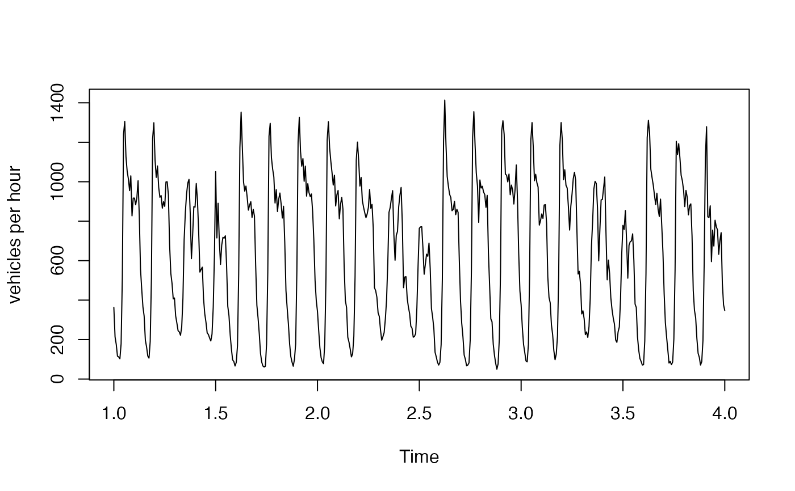
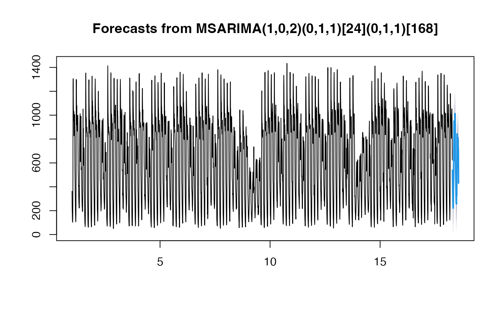

Number of vehicles per hour recorded by a single traffic sensor on the M-40, the outer ring road of Madrid, from 1 February to 31 May 2024.
The series shows the two seasonal patterns that msarima is meant for:
a daily cycle of period 24, with the morning and evening commuting peaks, and a
weekly cycle of period 168, with markedly lower volumes at the weekend.
Format
An msts object of length 2904 (121 days of hourly data) with seasonal periods
24 and 168. The first observation is midnight of Thursday 1 February 2024 and the
last is 11 p.m. of Friday 31 May 2024.
Source
Madrid City Council open data portal, https://datos.madrid.es.
Details
The raw measurements are half-hourly counts from sensor 3753, which were summed in pairs to obtain hourly volumes. A few of the underlying half-hourly counts had been interpolated by the provider, so 18 of the hourly values are not whole numbers. There are no missing values and no gaps in the hourly grid: the clock-change weekend of March 2024 is recorded as a regular sequence of hours.
The script that builds the object from the raw file is in data-raw/MAD_m40.R.
Examples
# The daily and weekly cycles
plot(window(MAD_m40, end = 4), ylab = "vehicles per hour")

# A multi-seasonal ARIMA with one daily and one weekly difference
# \donttest{
fit <- msarima(MAD_m40,
order = c(1, 0, 2),
seasonal = list(c(0, 1, 1), c(0, 1, 1)))
summary(fit)
#> Series: MAD_m40
#> MSARIMA(1,0,2)(0,1,1)[24](0,1,1)[168]
#>
#> Coefficients:
#> Estimate Std. Error z value Pr(>|z|)
#> AR(1) 0.82355 0.02055 40.082 < 2e-16 ***
#> MA(1) -0.08489 0.03043 -2.790 0.00527 **
#> MA(2) -0.06288 0.02893 -2.173 0.02976 *
#> SMA(1,1) -0.75184 0.01762 -42.681 < 2e-16 ***
#> SMA(2,1) -0.81843 0.01107 -73.901 < 2e-16 ***
#> ---
#> Signif. codes: 0 ‘***’ 0.001 ‘**’ 0.01 ‘*’ 0.05 ‘.’ 0.1 ‘ ’ 1
#>
#> sigma^2 = 5105.4386 log likelihood = -12933.6262
#> AIC = 25879.2524 AICc = 25879.2834 BIC = 25914.6850
plot(forecast(fit, h = 48))

# }